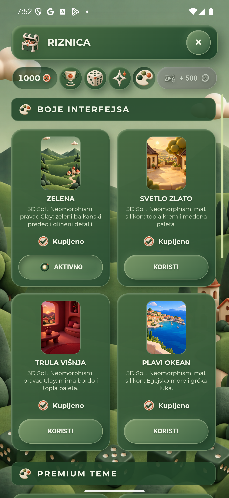
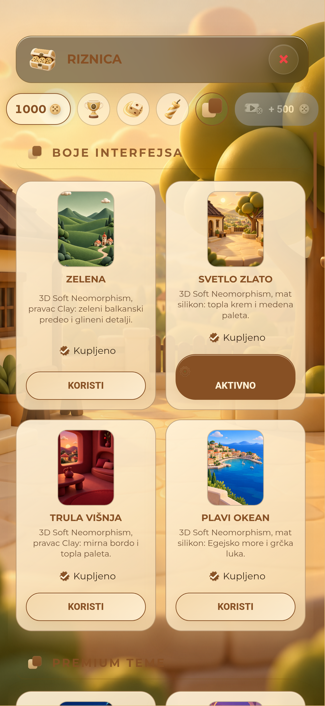
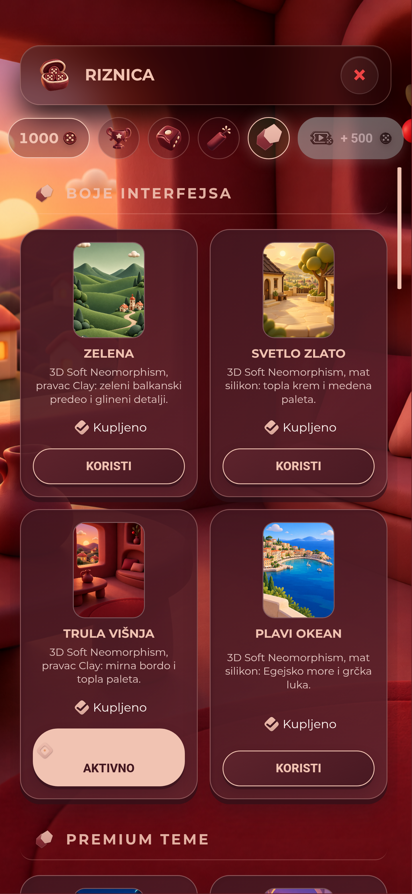
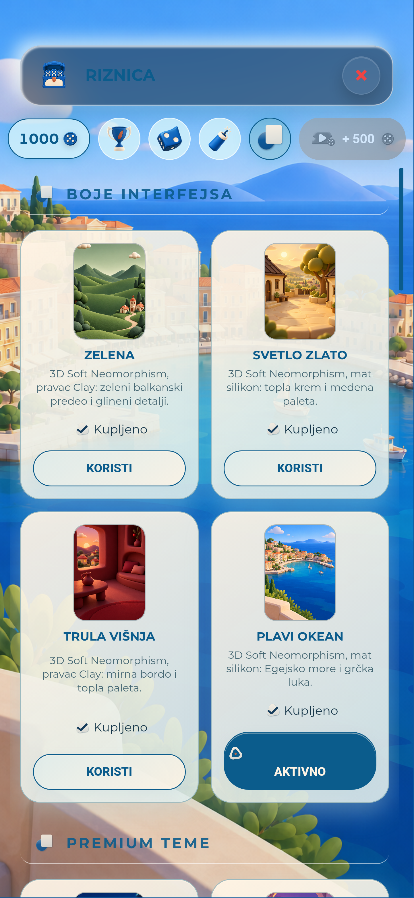
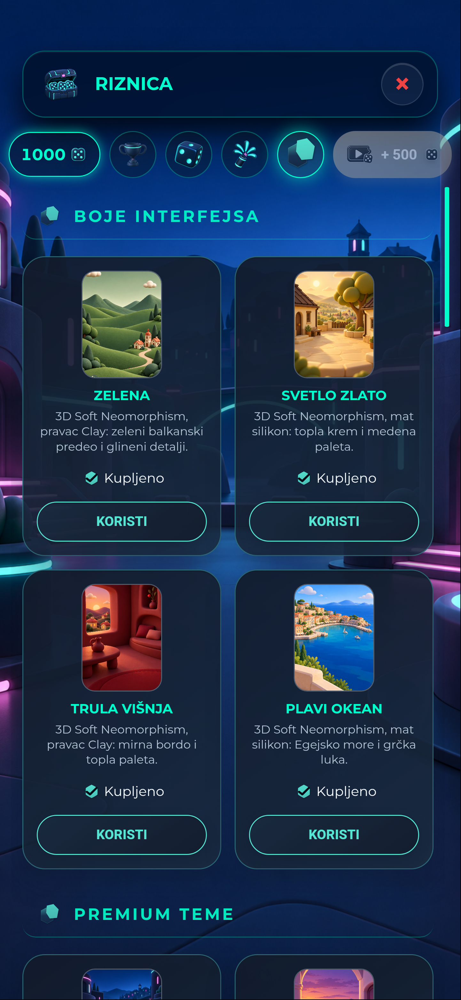
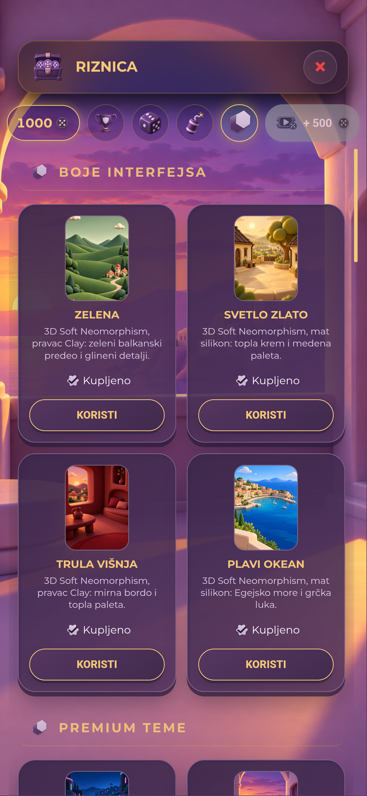
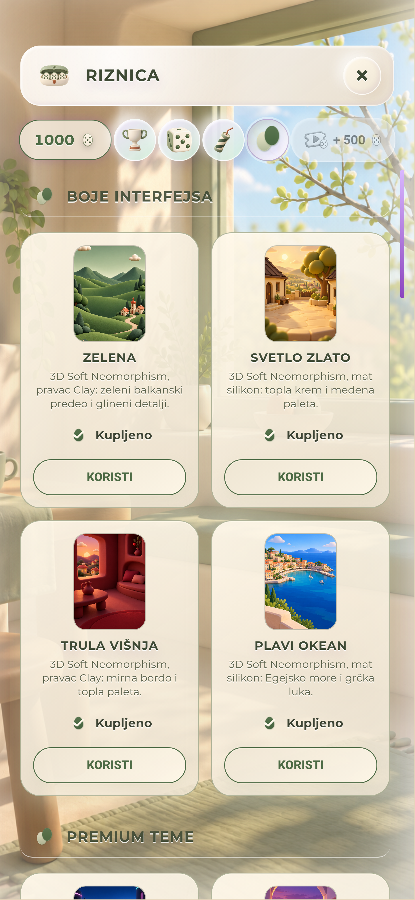
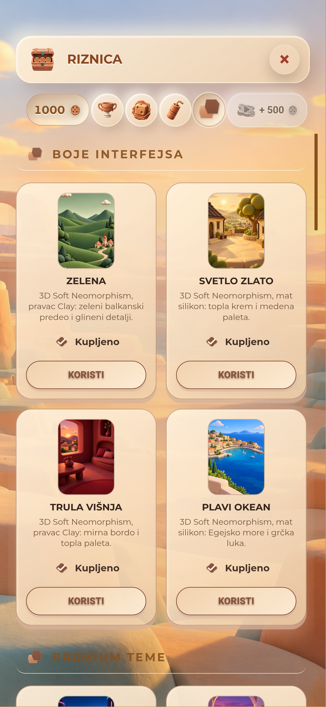
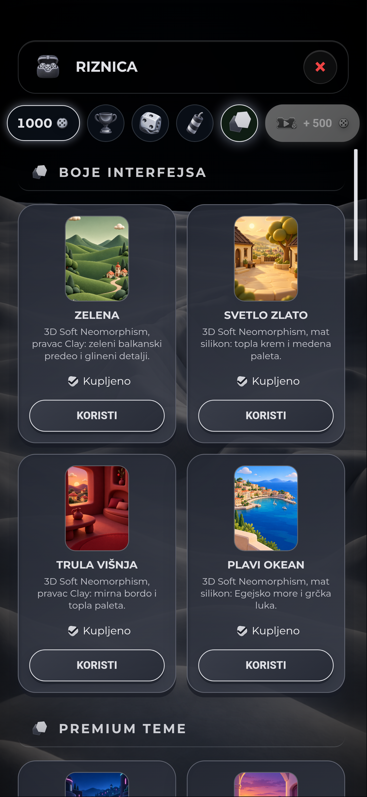
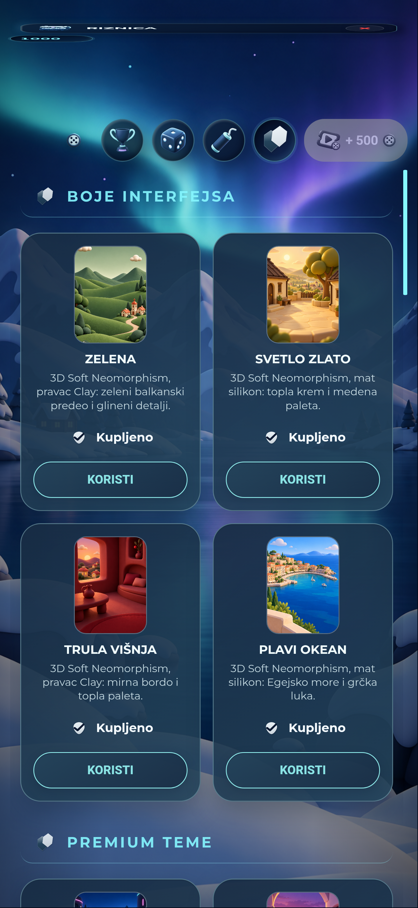

Stvarni Android QA prikaz taba „Teme” na poslednjem lokalnom APK-u. Kartice u svakom snimku koriste istih deset prihvaćenih pozadina; materijal, boje i kontrole pripadaju trenutno aktivnoj temi. Zelena je snimljena direktno sa uređaja.









